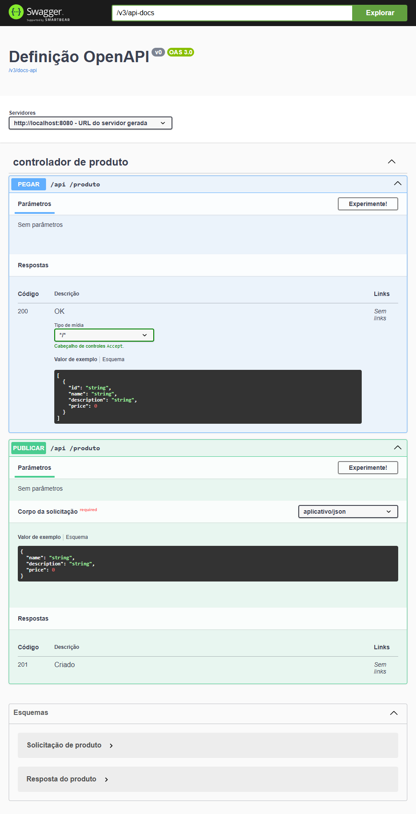
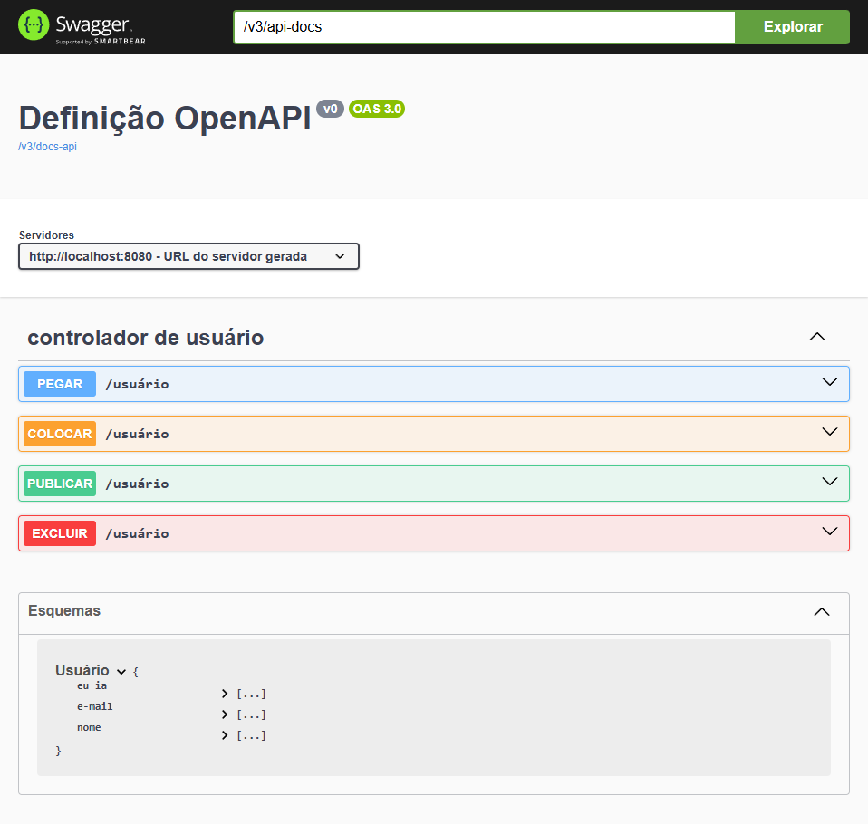
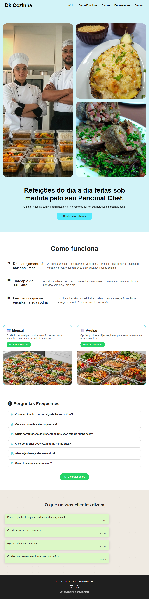
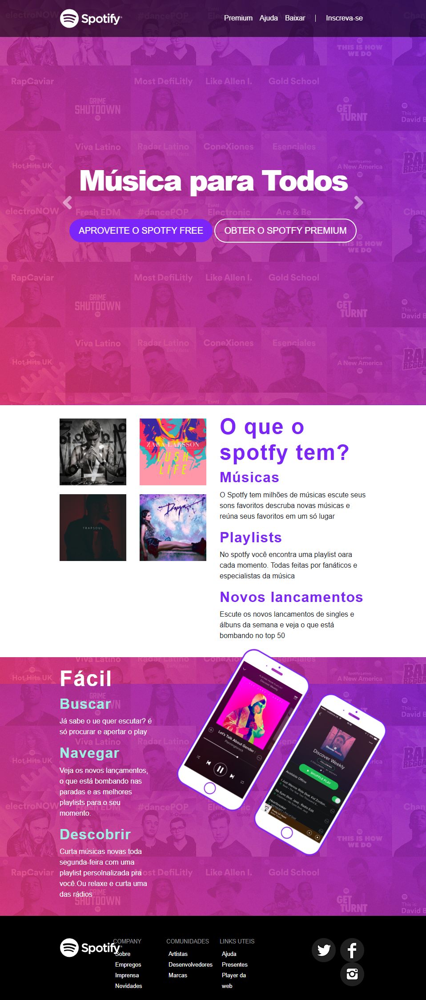
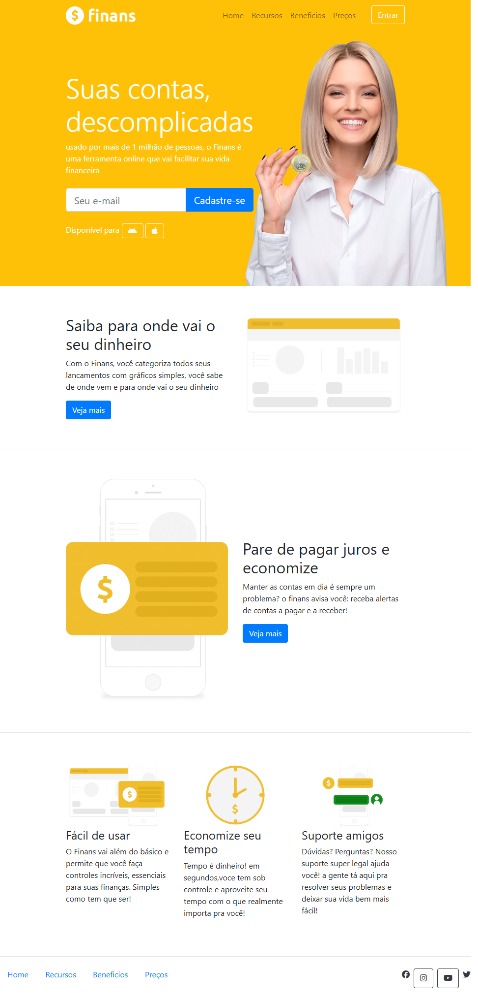
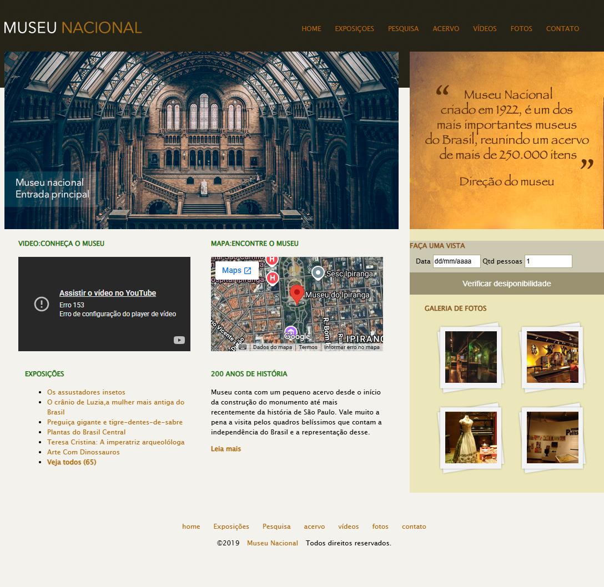

Construindo APIs REST robustas com Java, Spring Boot, MySQL e boas práticas de desenvolvimento.
GitHubOlá! Sou David Alves, desenvolvedor focado em construir soluções robustas, eficientes e escaláveis para o ecossistema backend, com especialidade em Java e Spring Boot.
Minha trajetória envolve o design e a implementação de APIs RESTful completas, aplicando conceitos sólidos de arquitetura de software, padrões de projeto (como a camada DTO) e persistência de dados otimizada com Hibernate e MySQL. Mais do que apenas escrever código, tenho como prioridade a entrega de softwares confiáveis, estruturando tratamentos globais de exceções e validações avançadas que garantem a segurança e a resiliência das aplicações.
Além do ecossistema Java, possuo experiência prática em desenvolvimento full-stack com PHP (Slim Framework), JavaScript (ES6+) e ferramentas de estilização como Bootstrap. Estou em constante evolução, atualmente aprofundando meus conhecimentos em arquitetura de microsserviços, segurança de APIs e boas práticas de clean code (SOLID), sempre buscando transformar desafios técnicos complexos em código limpo e de alto impacto.
API REST para gerenciamento de tarefas e usuários utilizando Spring Boot, JPA e MySQL.
Abaixo veja os destaques de engenharia do backend:

API REST para gerenciamento de usuários construída com Java e Spring Boot, aplicando validações, tratamento de exceções e persistência de dados.
Destaques da arquitetura:




